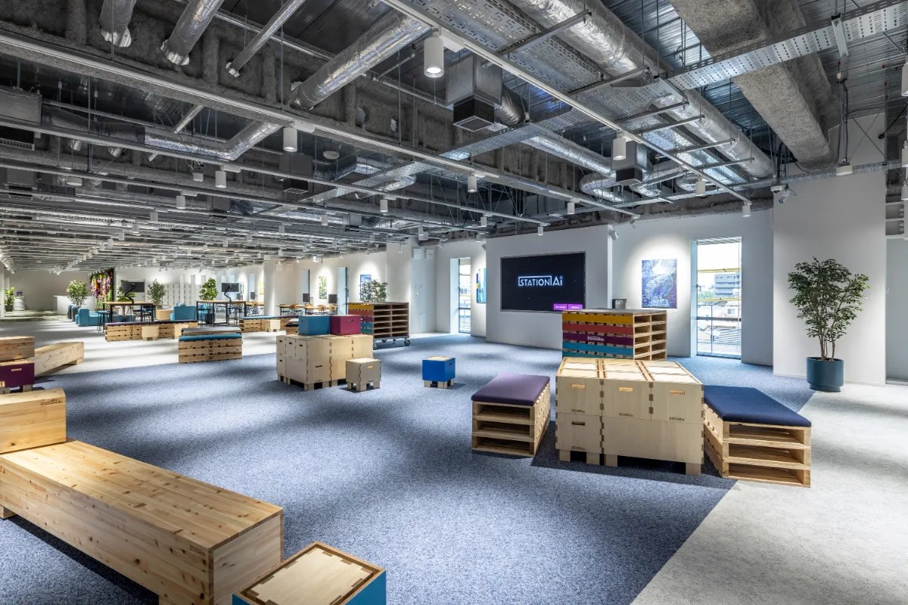
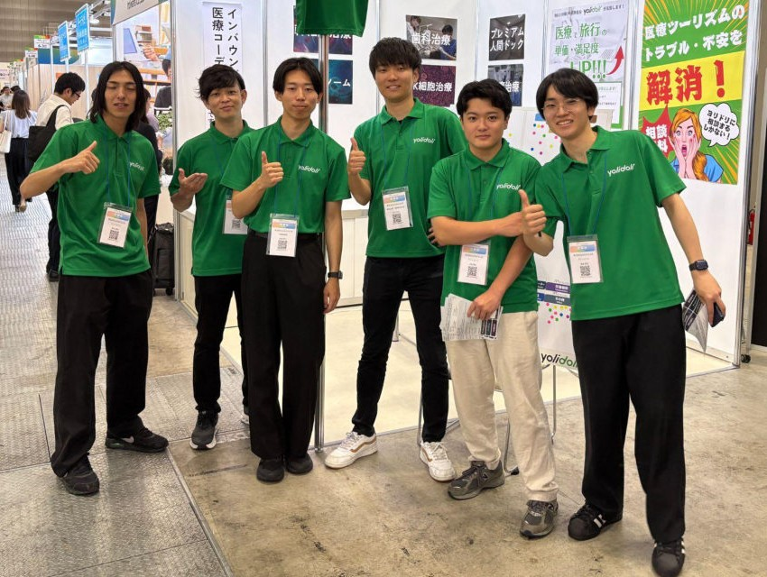

Courses
Courses
Listed from shortest to longest. The exams shown are examples and can be added to or changed to suit you.
All courses
Results translated for you.Your results arrive in Japanese, and yolidoli translates them into English or Indonesian.
-
About 3 hours
Basic health check-up
A general check of your whole body, centered on blood, urine and imaging tests. Good for a first check-up in Japan.
Body measurements, blood and urine tests, chest X-ray, ECG, abdominal ultrasound, etc.
Example clinic: Kenshinkai Tokyo Medical Clinic (Kita-ku, Tokyo)
-
Half day
Stomach and colon endoscopy check-up
Upper and lower endoscopy on the same day. For those concerned about digestive cancers.
Upper endoscopy, colonoscopy, tumor markers, blood tests, abdominal ultrasound, etc.
Example clinic: Tokyo Gut Clinic (Kanda, Chiyoda-ku, Tokyo)
-
1 day
Whole-body check-up centered on MRI
Examines the whole body with MRI and ultrasound, without endoscopy. For those who prefer to avoid endoscopy.
Abdominal MRI, cardiac ultrasound, tumor markers, blood tests, etc. (some courses add brain MRI and chest CT)
Example clinic: Clint Exe Clinic (Toranomon, Minato-ku, Tokyo)
-
1 day
Detailed check-up (Ningen Dock)
Endoscopy, brain MRI and CT in a single day, at a check-up center with multilingual support.
Upper endoscopy, brain MRI/MRA, chest CT, abdominal ultrasound, blood tests, etc.
Example clinic: TIMC TOKYO (Toyosu, Koto-ku, Tokyo)
-
2 days
Top-tier detailed check-up with PET-CT
Our most thorough course: PET-CT, MRI and endoscopy over two days. You stay in a private room, and an interpreter is included.
PET-CT, chest CT, MRI/MRA, upper and lower endoscopy, tumor markers, etc.
Example clinic: Fujita Health University Haneda Clinic (near Haneda Airport, Tokyo)
Focused courses
Heart and blood vessel check-up A closer look at your heart and blood vessels. Example hospital: The Cardiovascular Institute Hospital (Minato-ku, Tokyo)
Estimated cost
Approx. ¥90,000–¥1,400,000
The cost depends on the course, options and whether you need an interpreter, and may vary by around ¥100,000 even within the same course. Please treat it as a guide. For detailed courses over ¥1,000,000, we will share options after hearing your needs. We always confirm the final amount before booking.
A day of
your check-up
Example schedule
Here is an example of a half-day course. You check in in the morning and finish shortly after noon. An interpreter is with you on the day, guiding you through the exams and helping you talk with the doctors.
Times and the order of exams differ by clinic and course.
- Day before
Have an early dinner
There are food restrictions before some exams. yolidoli will send you the details the day before.
- 8:30
Check in and meet your interpreter
Meet your interpreter at the clinic, check in and change.
- 9:00
Interview, measurements, blood test
Start with the basic exams.
- 10:00
Imaging, endoscopy and more
Go through the exams included in your course.
- 12:00
Break and same-day explanation
Some clinics explain what can be known on the day.
- 13:00
Finish
The afternoon is yours.
Who this service
is for
For you
- You want to have a health check-up or ningen dock in Japan
- You're not sure which exams to choose
- You want us to handle booking and communication with the clinic
- You want to confirm cost, schedule and exam content in advance
- You want to fit a check-up into your stay in Japan
Hospitals we have worked with
How it works
Flow
- 01
Message us on WhatsApp
Send a short note on what concerns you and when you are thinking of visiting Japan
- 02
Consultation
yolidoli asks about your age, concerns, budget and travel dates
- 03
Course options and estimated cost
We suggest courses that fit you, so you can compare a few options
- 04
Booking
We confirm the final cost, and once you agree, yolidoli books the clinic
- 05
Before your visit
We tell you about food restrictions the day before, what to bring and where to meet
- 06
Your check-up in Japan
An interpreter stays with you from check-in to the last exam
- 07
Your results
Results arrive later in Japanese (it can take about a month). For every course, yolidoli translates them into English or Indonesian
- 08
Next steps
If anything in your results concerns you, we can also help you consult about further tests or a second opinion in Japan
Please read before your check-up
- All exams and medical judgments about your results are made by the clinic (doctors).
- Some exams require fasting from the day before or adjusting medication on the day. If you have a medical condition, please let us know in advance.
- Depending on availability, we may not be able to book your preferred date.
- Flights and accommodation are not included in the course cost.
FAQ
FAQ
How much does it cost?
As a guide, approx. ¥90,000–¥1,400,000. The cost depends on the course, options and whether you need an interpreter, and may vary by around ¥100,000 even within the same course. For detailed courses over ¥1,000,000, we will share options after hearing your needs. We always confirm the final amount before booking.
I'm not sure which course to choose.
We'll ask about your concerns, age and budget, and suggest a course that fits. It's fine to reach out even if you're not sure yet.
How many days should I stay in Japan?
Most courses take half a day to one day. For two-day courses or additional exams, we may recommend a slightly longer stay.
Is it okay if I don't speak Japanese?
We handle everything from consultation to booking in English and Indonesian. An interpreter is with you on the day of your check-up.
When and in what language will I get my results?
Results come from the clinic in Japanese and can take about a month. For every course, yolidoli translates them into English or Indonesian (translation is included in the course cost).
How do I get started?
Send us a message on WhatsApp with what concerns you and when you're thinking of visiting Japan. That's all you need.
Not sure which course fits you?
Let's talk first.
Send us a short note on what concerns you and when you're thinking of visiting Japan.
Ask about check-ups on WhatsAppAbout us

We combine medicine and technology to make healthcare accessible across borders. By connecting people around the world with high-quality medical care in Japan, we help them get care beyond the barriers of language and culture. Through our network of medical institutions and our digital tools, we work toward a future where anyone can choose the care that is right for them, with peace of mind.

Team
Our team in Japan handles communication with hospitals, organizes your records, and coordinates your schedule. You can consult us in English or Indonesian.
Company
- Company
- yolidoli Inc.
- Founded
- July 2024
- CEO
- Rikuto Funabiki
- Address
- Nagoya Institute of Technology, 29 Kiichi, Gokiso-cho, Showa-ku, Nagoya, Aichi 466-0061, Japan
- Business
- Development of a medical tourism platform
International patient support for medical institutions